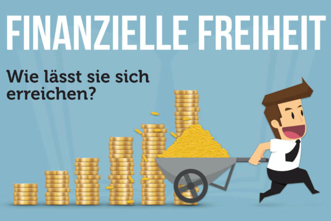

Welcome to Finanzielle freiheit
Finanzielle Freiheit (Passives Einkommen) | Finanzgeflüster
2020.12.03 11:55Skip to content
Deine Finanzen, Deine Steuern und Dein Geld!
0Warenkorb
Es befinden sich keine Produkte im Warenkorb.
Steuertipps Steuer-Basics Kinder im Steuerrecht Erben und Schenken die Basics! Steuern als Ausgabe (Welche Steuern minimieren Ihre Steuerlast!) Betriebsausgaben, die keine sind! Steuerarten in Deutschland! Arbeitnehmer Werbungskosten für Arbeitnehmer Feiern mit dem Finanzamt! Gesundheitsförderung! Steuerlich optimieren! Steuerklassen in Deutschland Steuer machen lohnt sich! Lohnsteuerermäßigungs- antrag Investoren Die Vermögensverwaltende GmbH (Holding-Struktur) Besteuerung von P2P-Krediten! Kapitalertragsteuer Für Gründer Kleinunternehmer (Kleinunternehmerregelung) Gewerbeanmeldung, das solltest DU dazu wissen! Unterlagen für die Steuererklärung! Jahreswechsel und wichtiges für Steuerpflichtige! Steuern im Internet Steuern mit Kopf (Steuern spart, wer Steuern plant!) Besteuerung von Airbnb! Besteuerung eines Youtube Kanal! Besteuerung von Affiliate Marketing! Besteuerung eines Onlineshop! Steuern sparen mit Checklisten! Spartipps für Sparfüchse Spartipp 1: Bargeld-Regel! Spartipp 2: Sparschwein Spartipp 3: 10 %-Regel Spartipp 4: Geldfresser! Spartipp 5: Haushaltsbuch Spartipp 6: Das Gehalt Spartipp 7: Gebrauchtes verkaufen! Spartipp 8: Wer günstig kauft! Spartipp 9: Die Rücklage Spartipp 10: Vergleichsportale Sparplan auf Aktien, ETF und P2P! Anlegen Aktien Dividenden-Aristokraten, die Könige der Dividende! Soll ich Aktien kaufen? Cost-Average-Effekt Dividendenstrategie Sparplan auf Aktien, ETF und P2P! Junior Depot als Alternative zum Sparbuch, für Nichte, Neffen und Kind! Kapitalertragsteuer ETF Sparplan auf Aktien, ETF und P2P! Kapitalertragsteuer Immobilien Immobilienkauf, worauf sollten Sie achten? Risiko von Immobilien Steuerliche Fallen bei Immobilien! Immobilie kaufen Immobilie vermieten, darauf sollten Sie steuerlich Achten! Immobilie verkaufen, wann es Sinn macht? Immobilien im Unternehmen P2P für Anfänger P2P-Kredite (Plattformen) Auxmoney Bondora Fellow Finance FinBee Funding Circle Mintos TWINO Saving Stream SAVY Viventor Besteuerung von P2P-Krediten! P2P in der deutschen Steuererklärung (P2P und Steuern) Portfolio-Manager bei P2P Krediten Risiken von P2P Anlage Kryptowährung Steuern bei Kryptowährungen Besteuerung von Kryptowährungen (Bitcoin und Steuer) Mining und die Steuer (Kryptowährungen schürfen) Besteuerung von Cloud Mining! – Genesis, Hashflare und Bitclub! Kryptowährungen und die Umsatzsteuer – Miner und Trader! Bitcoin Kapitalertragsteuer – Vorsicht vor Fakenews! Verluste bei Kryptowährungen (Bitcoin und die Steuer) Alles privat oder? – Vorsicht Gewerblicher Bitcoin Handel Steuertrick für Bitcoin und andere Kryptowährungen! Einstieg Kryptowährungen, wo fange ich an? (Bitcoin, Dash und Ethereum?) Was sind Krytpowährungen? Kurz erklärt! Cloud-Mining und was ich davon halte! Kryptowährungen und Sicherheit – so schützen Sie sich! Kraken.com Bitcoin handeln leicht gemacht! Mining, also los geht´s! Das brauchst du alles! (Mining für Anfänger) Bitcoin Crash, der Denkfehler! – Warum es unwahrscheinlich ist! Bitcoin jetzt kaufen? Sollte man jetzt noch Kryptowährungen kaufen? Cashflow oder Networth? Shop Checkliste Steuern sparen! Checkliste für die Steuererklärung 2018 Steuern sparen aber wie? Steuern sparen als Arbeitnehmer Steuern sparen als Student Steuern sparen als Mieter Steuern sparen als Familie Steuern sparen als Anleger Steuern sparen als Vermieter Steuern sparen als Unternehmer Steuern sparen als Online-Unternehmer Steuern sparen als Freiberufler Steuern sparen als Rentner Steuern sparen als MinerInvestieren
Finanzielle Freiheit (Passives Einkommen)
Veröffentlicht am 14. März 2017 2. November 2019 von Finanzgefluester 14Mrz
Finanzielle Freiheit und die Unabhängigkeit durch passives Einkommen. Wie schafft man es zur finanziellen Freiheit und was bedeutet finanzielle Freiheit eigentlich?
Finanzielle Freiheit!
Viele Menschen träumen davon nicht mehr arbeiten zu müssen und von den Erträgen Ihrer Investments zu leben. Das nennt sich die finanzielle Freiheit. Sie müssen nicht mehr für jeden Euro aufstehen, sondern bekommen sogar Geld, wenn Sie schlafen. Für die finanzielle Freiheit benötigen Sie also entweder ein passives Einkommen oder eine Hohe Substanz.
Der Weg zur finanziellen Freiheit kann unterschiedlich sein. Der eine schafft es mit harter Arbeit zur finanziellen Freiheit. Das kann zum Beispiel der Verkauf des eigenen Unternehmens sein. Andere bauen Ihre Freiheit über ein passives Einkommen auf. Die Wege sind unterschiedlich, aber das Ziel ist das gleiche! Nicht mehr arbeiten zu müssen und womöglich auszuwandern. Wer wünscht sich nicht das Leben in der Sonne!
Alles easy!
Wussten Sie, dass es leichter ist finanziell unabhängig zu werden, als Millionär zu werden? Finanziell frei sein bedeutet, dass alle Ihr Ausgaben durch ein passives Einkommen gedeckt sind. Das umfasst als Miete, Essen, Auto und weiteres. Das Verständnis von frei sein, ist für jeden aber unterschiedlich. Es gibt Menschen, die sind mit 500 € finanziell Frei. Es gibt aber auch Menschen für die reichen 10.000 pro Monat nicht aus. Finanziell frei sein ist also keine Summe X wie eine Million. Finanzielle Freiheit bedeutet eher, dass Ihr passives Einkommen Ihr Leben finanziert.
Wenn man davon ausgeht, dass Ihnen 2.000 € im Monat zum Leben reichen. Dann benötigen Sie lediglich 480.000 €. Wenn Sie diese bei 7 % Rendite anlegen, dann erhalten Sie nach Steuern ca. 24.000 € an Ertrag pro Jahr. Aufgrund von Inflation und Zinseszins ist diese Rendite nach wenigen Jahren sehr wahrscheinlich! In meinem Artikel „ Mit einer Million in Rente “ habe ich einige Beispiele aufgeführt, wie es rechnerisch funktioniert!
Keep it simple!
Wichtiger finde ich persönlich jedoch die Art des Einkommens. Wenn Sie durchs Internet surfen, dann wird Ihnen auf jeder zweiten Seite angezeigt, wie Sie reich werden! Das am besten gestern und sofort! Jedoch halte ich nicht viel von diesen Methoden. Zum einen wird Ihnen auf den meisten Seiten nur ein Produkt verkauft. Meistens handelt es sich um unnütze Coachings.
Denken Sie daran, dass Sie auf dem Weg zu finanziellen Freiheit Verstand benötigen. Sei es, dass Sie Ihr Unternehmen aufbauen und verkaufen . Durch das Investieren in Aktien und ETF oder P2P . Vielleicht schreiben Sie auch ein Buch, eröffnen einen YouTube-Channel oder fangen an einen Blog zu schreiben. Das wichtigste ist Keep It simple !
Komplexe und eventuell auch hochriskante Investments oder Methoden sind langfristig keine guten Helfer auf dem Weg zu finanziellen Freiheit. Sie sollten daher immer langfristig agieren. Das auch im Hinblick auf die Dauer der finanziellen Freiheit. Es gibt zwar Investoren, welche auf diese Weise gute Erträge erwirtschaften. Aber jede Glückssträhne endet irgendwann.
Passives Einkommen oder Substanz?
Es gibt unterschiedliche Herangehensweisen. Entweder Sie investieren und leben von einem passiven Einkommen oder Sie leben von der Substanz des Vermögens. Ich bin für das passive Einkommen. Zum einen Sie erwirtschaften immer noch Erträge und können im Notfall die Substanz angreifen. Der zweite Grund ist, dass Sie nie wissen wie lange Sie leben.
Der Dritte Grund ist, dass ein Aufbau von Vermögen mit einem passiven Einkommen schneller funktioniert als durch das reine Sparen und leben von der eigenen Arbeitskraft. Aber welche Möglichkeiten gibt es für ein Passives Einkommen?
E-Book Buch Blog Youtube-Channel P2P Aktien ETF Immobilien vermieten Werbefläche auf dem Auto vermieten!Diese Liste ist natürlich nicht abschließend.
Nicht jedes passive Einkommen ist von Anfang an passiv. Die meisten benötigen am Anfang erst viel Arbeit. Das gilt zum Beispiel auch für diesen Blog. Daher sollten Sie immer eine Art wählen mit der Sie leicht eine Einkommensquelle erschließen können. Diese sollte daher nahe bei Ihren persönlichen Qualifikationen liegen.
Der Weg ist das Ziel!
Interessant ist es zu sehen, dass Menschen die auf die finanzielle Freiheit hinarbeiten schon auf dem Weg frei werden. Sei es, dass Sie bald merken, wie viel Sie sparen können. Bedenken Sie, wie viel weniger Geld Sie benötigen, wenn Sie weniger Ausgaben haben. Ein bisschen Hilfe zum Reduzieren der Ausgaben können Sie hier nachlesen.
Spätestens wenn die ersten Erträge aus dem passiven Einkommen eingehen, werden Sie merken wie schnell es funktioniert. Bleiben Sie am Ball, die finanzielle Freiheit können Sie erreichen. Sie können Sie auch schneller erreichen, wenn Sie mehr arbeiten. Am Anfang Gas geben, dann geht es schneller. Der Zinseszins arbeitet nicht nur bei Aktien und ETF, sondern auch bei Reichweite und Bekanntheitsgrad.
Frei was dann?
Viele wollen die finanzielle Freiheit um nicht mehr Arbeiten zu müssen. Die erste Frage die Sie sich stellen sollten, ist die Tätigkeit die Sie ausüben, das was Sie machen wollen? Oder können Sie auch mit einem anderen Beruf genauso viel oder mehr verdienen? Bedenken Sie, dass Sie leichter damit Geld verdienen was Ihnen Spaß macht. In Berufen in denen Sie persönlich aufgehen können Sie auch schneller befördert werden.
Auf dem Weg zur finanziellen Freiheit kann es sein, dass Sie viele Überstunden aufbauen müssen, damit Sie Ihr Ziel schneller erreichen! Deshalb sollten Sie eine Tätigkeit ausführen die Ihnen Erfüllung bietet.
Denn finanzielle Freiheit bedeutet auch nicht, dass Sie an Tag X Ihren Job kündigen und dann nur noch von den Erträgen leben. Finanzielle Freiheit bedeutet eher, dass Sie das arbeiten was Ihnen Spaß macht. Nicht weil Sie es müssen, sondern weil Sie es können! Stellen Sie sich vor, dass Sie 2.000 € pro Monat als passives Einkommen haben und nochmal 1.000 € aus einer Teilzeittätigkeit die Ihnen Spaß macht. Das ist Lebenswert.
Ich persönlich kenne eine Handvoll Menschen die finanzielle Frei sind. Diese Menschen müssten nicht arbeiten. Sie tun es aber trotzdem. Einige von Ihnen verdienen passiv mehr als ihr Arbeitgeber. Aber Sie arbeiten, weil es ihnen Spaß macht. Das ist am Ende finanzielle Freiheit durch ein passives Einkommen!
QIX der Rechner für finanzielle Freiheit !
Produktempfehlungen, die ich selbst regelmäßig nutze. Mein privates Konto , meine P2P-Empfehlung , mein Tagesgeld und meine Kreditkarte .
Das ist auch interessant für dich „ Das Schneeballprinzip “ oder „ Geld sparen beim Umzug „.
Du willst weitere Informationen?
Steuern im Internet YouTube und die Besteuerung Besteuerung von Airbnb Affiliate Marketing und die Steuer Besteuerung eines Onlineshop Mining und Trading – So erfolgt Besteuerung von Kryptowährungen Sparen im 21. Jahrhundert Cashkurs , das Buch ist umstritten aber meiner Ansicht nach sehr zu empfehlen. Rich Dad Poor Dad zusammen mit Cashflow Quadrant gehört es in jede Bibliothek. Dividendeninvestor , das Buch für Dividenden. Der reichste Mann von Babylon , ein Buch für finanzielle Bildung. Die Investment Bibel für ETF und Sparpläne. Souverän investieren von Gerd Kommer. Weitere Empfehlungen finden Sie hier .Spardirsteuern.de mein Steuerspar-Blog mit laufenden neuen kostenlosen Checklisten für Sparer.
YouTube-Empfehlung:
Steuern mit Kopf
Disclaimer: Der Autor/Sprecher übernimmt keinerlei Gewähr für die Aktualität, Korrektheit, Vollständigkeit oder Qualität der bereitgestellten Informationen. Haftungsansprüche gegen den Verfasser, welche sich auf Schäden materieller oder ideeller Art beziehen, die durch die Nutzung der dargebotenen Informationen bzw. durch die Nutzung fehlerhafter und unvollständiger Informationen verursacht wurden, sind grundsätzlich im weitest zulässigen Rahmen ausgeschlossen. Das Video stellt in keiner Art und Weise eine professionelle Steuerberatung dar und ersetzt diese auch nicht.
Dieser Eintrag wurde veröffentlicht am Investieren und getaggt Aktien , Aktien-Sparplan , Anlegen , Bücher , Comdirect , Dividenden , Dividendenstrategie , ETF , ETF-Sparplan , finanzielle Freiheit , finanzielle unabhändigkeit , Frei sein , Freiheit , Gewerbebetrieb , Gründen , Investorenblog , Kapitalerträge , Kapitalertragsteuer , Kapitalvermögen , P2P , P2P-Kredite , Passives Einkommen , Sparerpauschbetrag , Sparschwein , Unternehmer , Vermietung , Wirtschaftsblog .Finanzgefluester
9 Idee über “ Finanzielle Freiheit (Passives Einkommen) ”
Pingback: P2P in der deutschen Steuererklärung (P2P und Steuern) | Finanzgeflüster
Pingback: Dein erster Schritt zur finanziellen Flexibilität - Finanzlust
Stephan sagt:Hallo Roland,
vielen Dank für diesen Artikel. Besonders den Hinweis „Keep it simple“ finde ich wichtig. Auch wenn die finanzielle Freiheit noch so sehr reizt, sollte man dafür nicht alles opfern. Deshalb lieber in „langweilige“ Produkte investieren, die man auch versteht.
Deine Rechnung mit den 2.000 € Ausgaben klingt gut. Eine Studie der Trinity-Universität in Texas kam 1998 zu ähnlichen Ergebnissen. Sie sagen, dass man mit dem 25-fachen seiner Jahresausgaben auf dem Konto finanziell frei ist. Das reicht dann, um alle Ausgaben zu decken ohne die Basis-Summe aufzubrauchen.
Was ich aber viel wichtiger finde und was du auch ansprichst ist das warum. Ich beobachte, dass viele Menschen die finanzielle Freiheit anstreben, um endlich aus ihrem Job herauszukommen. Das ist für mich der falsche Ansatz, denn sie werden noch länger in ihrem Job bleiben müssen, um genug Geld anzusparen.
Meine Gedanken dazu habe ich in einem Artikel zusammengefasst, der bestimmt auch für deine Leser interessant ist: http://wohlstand-aufbauen.de/finanzielle-freiheit-nicht-ziel/
Viele Grüße
Stephan
Pingback: Mit ETFs finanziell unabhängig werden! - Geht das? | Finanzgeflüster
Pingback: Money Monday der 20.03.2017 | Finanzgeflüster
Aktien kompakt sagt:Hallo Roland,
herzlichen Glückwunsch zu diesem gelungenen Artikel. Du beschreibst genau die typischen Maßnahmen zur finanziellen Freiheit. Ich denke viele Leser werden sich wiederfinden.
Ich finde es sehr wichtig, sich schon sehr früh mit seinen Finanzen zu beschäftigen und vor allem früh mit dem Investieren anzufangen auch wenn es nur ganz kleine Geldbeträge sind. Die wichtigste Zutat des Zinseszins-Effektes ist nunmal die Zeit. Insofern ist der Weg zur finanziellen Freiheit ein Ausdauersport.
Ich persänlich finde es sinnvoll mehrere Einkommensquellen zu haben, möglichst skalierbare Einkommen. Das beste Investment sind die eigenen Fähigkeiten egal welche. Viele der weltbesten Investoren, Unternehmer, Sportler etc. haben nicht unbedingt ihre eigenen Schwächen und Fehler abgestellt, sondern ihre Stärken maximal ausgebaut und kultiviert. Und sie alle arbeiten weiterhin, weil sie Überzeugungstäter sind.
Trotz aller Einkommensmaximierung und Kostenreduzierung finde ich es daher wichtig, auch im Hier und Jetzt zu leben und die Dinge zu tun, an denen man Spaß hat. 🙂
Viele Grüße
Christian
http://www.aktien-kompakt.com
9. März 2019 um 14:00 Antworten Frank sagt:Hallo Roland,
finanzielle Freiheit ist ein spannendes Thema, mit dem ich mich nun auch schon ein paar Jahre passiv und aktiv auseinandersetze. Ich finde dazu auf den folgenden Beitrag interessant: https://www.proffeinvest.de/finanzielle-freiheit-erreichen/
Mir geht es da noch nicht mal darum, an Tag X einfach nichts mehr zu tun, sondern einfach die Wahl zu haben. Daher unterstreiche deine Feststellung „Der Weg ist das Ziel“. Auch schon mit ein wenig Zusatzeinkommen, oder einem weniger kapitalabhängigen Lebensstil, eröffnet einem das mehr Möglichkeiten. Möglichkeiten auch mal „Nein“ sagen zu können, wo man vorher ja gesagt hat, weil man von dem Geld abhängig war.
Was mir persönlich auf dem Weg dahin auffällt, ist, das viele Grenzen nicht auf dem Bankkonto, sondern im Kopf bestehen. „Das kann ich nicht.“ „Das ist zu riskant.“ „Davon habe ich doch gar keine Ahnung.“ „Meine Freunde/Familie/ rät mir davon ab.“ Wie sie oft im Leben gilt es hier einen Weg zu wählen, auch mal kontrolliert (mit wenig Kapital) hinzufallen und dann aber wieder mit sehr viel mehr Kraft aufzustehen.
Schönen Gruß,
Frank
Pingback: Wofür eigentlich sparen? - Deine Zukunft dankt dir! | Finanzgeflüster
Pingback: Kündigen und Durchstarten! Vollzeitunternehmer werden! | Finanzgeflüster
Schreibe einen Kommentar Antworten abbrechen
Verbiete Google Analytics, mich zu verfolgen Freunde und Partner! Steuerberater Roland Elias Gründer Steuern mit Kopf YouTube-Channel! Aktien mit Kopf Aktien und ETF! Unternehmerkanal Für Gründer! Immobilien mit Kopf! Immobilieninvestor! Versicherungen mit Kopf! Versichern! Sparen mit Kopf für Sparfüchse! Impressum Rechtliches! Datenschutzerklärung Presseinformationen! Kategorien Allgemein Anlegen Beruf Empfehlung Gründen Im Internet Geld verdienen Immobilien Influencer Interview Investieren Kinder Kryptowährung Money Monday Motivation P2P in Deutschland! Projekte Sparen Steuern Steuern mit Kopf Steuern2go Unternehmer Versicherung VIMCAR Vorsorge YouTube Neueste Kommentare Schutz vor Mietern bei Die Vermögensverwaltende GmbH (Holding-Struktur) Rob bei Genesis Mining ein Jahr das Fazit! Investment oder Abzocke? Nanna Lam bei Besteuerung von Kryptowährungen (Bitcoin und Steuer) Heike Michael bei VIMCAR das elektronische Fahrtebuch im Langzeittest Reiner Pohl bei Erbschaft und Schenkung an die Enkel! Steuern mit Kopf Made with in MunichCopyright © 2020 by Golden Web Age . Steuertipps Steuer-Basics Kinder im Steuerrecht Erben und Schenken die Basics! Steuern als Ausgabe (Welche Steuern minimieren Ihre Steuerlast!) Betriebsausgaben, die keine sind! Steuerarten in Deutschland! Arbeitnehmer Werbungskosten für Arbeitnehmer Feiern mit dem Finanzamt! Gesundheitsförderung! Steuerlich optimieren! Steuerklassen in Deutschland Steuer machen lohnt sich! Lohnsteuerermäßigungs- antrag Investoren Die Vermögensverwaltende GmbH (Holding-Struktur) Besteuerung von P2P-Krediten! Kapitalertragsteuer Für Gründer Kleinunternehmer (Kleinunternehmerregelung) Gewerbeanmeldung, das solltest DU dazu wissen! Unterlagen für die Steuererklärung! Jahreswechsel und wichtiges für Steuerpflichtige! Steuern im Internet Steuern mit Kopf (Steuern spart, wer Steuern plant!) Besteuerung von Airbnb! Besteuerung eines Youtube Kanal! Besteuerung von Affiliate Marketing! Besteuerung eines Onlineshop! Steuern sparen mit Checklisten! Spartipps für Sparfüchse Spartipp 1: Bargeld-Regel! Spartipp 2: Sparschwein Spartipp 3: 10 %-Regel Spartipp 4: Geldfresser! Spartipp 5: Haushaltsbuch Spartipp 6: Das Gehalt Spartipp 7: Gebrauchtes verkaufen! Spartipp 8: Wer günstig kauft! Spartipp 9: Die Rücklage Spartipp 10: Vergleichsportale Sparplan auf Aktien, ETF und P2P! Anlegen Aktien Dividenden-Aristokraten, die Könige der Dividende! Soll ich Aktien kaufen? Cost-Average-Effekt Dividendenstrategie Sparplan auf Aktien, ETF und P2P! Junior Depot als Alternative zum Sparbuch, für Nichte, Neffen und Kind! Kapitalertragsteuer ETF Sparplan auf Aktien, ETF und P2P! Kapitalertragsteuer Immobilien Immobilienkauf, worauf sollten Sie achten? Risiko von Immobilien Steuerliche Fallen bei Immobilien! Immobilie kaufen Immobilie vermieten, darauf sollten Sie steuerlich Achten! Immobilie verkaufen, wann es Sinn macht? Immobilien im Unternehmen P2P für Anfänger P2P-Kredite (Plattformen) Auxmoney Bondora Fellow Finance FinBee Funding Circle Mintos TWINO Saving Stream SAVY Viventor Besteuerung von P2P-Krediten! P2P in der deutschen Steuererklärung (P2P und Steuern) Portfolio-Manager bei P2P Krediten Risiken von P2P Anlage Kryptowährung Steuern bei Kryptowährungen Besteuerung von Kryptowährungen (Bitcoin und Steuer) Mining und die Steuer (Kryptowährungen schürfen) Besteuerung von Cloud Mining! – Genesis, Hashflare und Bitclub! Kryptowährungen und die Umsatzsteuer – Miner und Trader! Bitcoin Kapitalertragsteuer – Vorsicht vor Fakenews! Verluste bei Kryptowährungen (Bitcoin und die Steuer) Alles privat oder? – Vorsicht Gewerblicher Bitcoin Handel Steuertrick für Bitcoin und andere Kryptowährungen! Einstieg Kryptowährungen, wo fange ich an? (Bitcoin, Dash und Ethereum?) Was sind Krytpowährungen? Kurz erklärt! Cloud-Mining und was ich davon halte! Kryptowährungen und Sicherheit – so schützen Sie sich! Kraken.com Bitcoin handeln leicht gemacht! Mining, also los geht´s! Das brauchst du alles! (Mining für Anfänger) Bitcoin Crash, der Denkfehler! – Warum es unwahrscheinlich ist! Bitcoin jetzt kaufen? Sollte man jetzt noch Kryptowährungen kaufen? Cashflow oder Networth? Shop Checkliste Steuern sparen! Checkliste für die Steuererklärung 2018 Steuern sparen aber wie? Steuern sparen als Arbeitnehmer Steuern sparen als Student Steuern sparen als Mieter Steuern sparen als Familie Steuern sparen als Anleger Steuern sparen als Vermieter Steuern sparen als Unternehmer Steuern sparen als Online-Unternehmer Steuern sparen als Freiberufler Steuern sparen als Rentner Steuern sparen als Miner We use cookies on our website to give you the most relevant experience by remembering your preferences and repeat visits. By clicking “Accept”, you consent to the use of ALL the cookies. Cookie settings ACCEPT Privacy & Cookies Policy Schließen
Privacy Overview
This website uses cookies to improve your experience while you navigate through the website. Out of these, the cookies that are categorized as necessary are stored on your browser as they are essential for the working of basic functionalities of the website. We also use third-party cookies that help us analyze and understand how you use this website. These cookies will be stored in your browser only with your consent. You also have the option to opt-out of these cookies. But opting out of some of these cookies may affect your browsing experience. Notwendig Notwendig immer aktivNecessary cookies are absolutely essential for the website to function properly. This category only includes cookies that ensures basic functionalities and security features of the website. These cookies do not store any personal information.
Nicht notwendig Nicht notwendigAny cookies that may not be particularly necessary for the website to function and is used specifically to collect user personal data via analytics, ads, other embedded contents are termed as non-necessary cookies. It is mandatory to procure user consent prior to running these cookies on your website.
Anmelden
